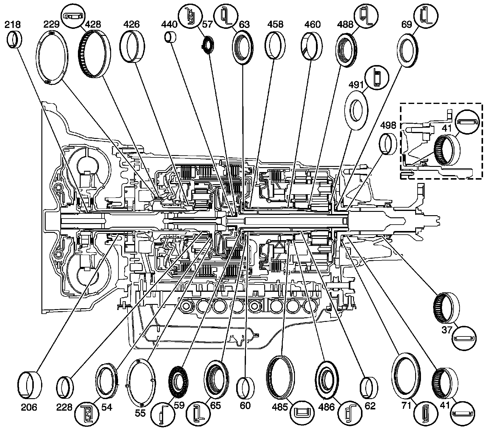

Bushing, Bearing, and Washer Locations (6L50)
Bushing, Bearing, and Washer Locations (6L50)
Bushing, Bearing, and Washer Locations (6L50):

37 - Output Shaft Bearing Assembly - 2WD Models Only
41 - Output Shaft Bearing Assembly - Case
54 - Input Sun Gear Thrust Bearing
55 - Input Sun Gear Thrust Washer
57 - Turbine Shaft Thrust Bearing Assembly
59 - 4-5-6 Clutch Hub Thrust Bearing Assembly
60 - Output Carrier Inner Sun Gear Shaft (Front) Bushing
62 - Output Carrier Inner Sun Gear Shaft Bushing
63 - 1-2-3-4 Clutch Hub Thrust Bearing Assembly
65 - 2-6 and 3-5 Reverse Clutch Hub Thrust Bearing Assembly
69 - Output Carrier Thrust Bearing Assembly
71 - Output Shaft Thrust Bearing Assembly
206 - Torque Converter Bushing
218 - Turbine Shaft Front Bushing
228 - Turbine Shaft Rear Bushing
229 - 1-2-3-4 and 3-5 Reverse Clutch Housing Thrust Washer
426 - 1-2-3-4 and 3-5 Reverse Clutch Housing Rear Bushing
428 - 1-2-3-4 and 3-5 Reverse Clutch Bearing Assembly
440 - Output Carrier Shaft Housing Bushing
458 - Output Carrier Outer Sun Gear Shaft (Front) Bushing
460 - Output Carrier Outer Sun Gear Shaft Rear Bushing
485 - Center Support Roller Bearing Assembly
486 - Output Carrier Front Sun Gear Thrust Bearing Assembly
488 - Output Carrier Front Sun Gear Rear Thrust Bearing Assembly
491 - Output Carrier Rear Sun Gear Thrust Bearing - Captured
498 - Output Carrier Bushing